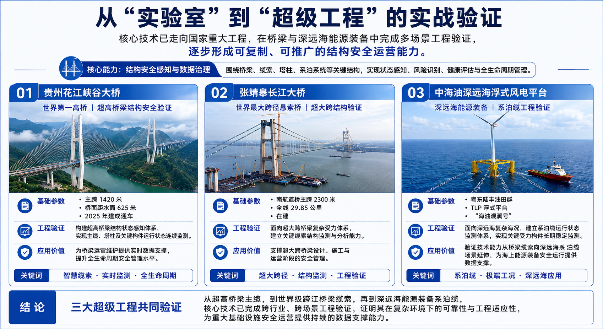
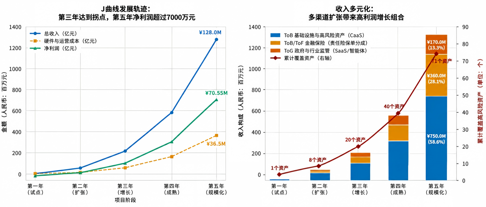

愿景：让每一根光纤拥有感知神经，让每一座结构工程具备智慧生命。
定位：在大长桥梁及地下工程等高危基础设施领域，业主与保险机构对隐蔽结构“不可见、难预警、高赔付”存在强烈的风险减量与合规刚需；我们依托光纤光栅阵列技术与自研 AIP（AI-ready Data Platform 数据运营平台）及 FDE（Forward Deployed Engineer 前沿部署工程师）现场交付体系，能够以可控成本将静态工程转化为可持续运营的数据资产，实现 FaaS（光纤即服务）商业变现。本轮天使轮融资 500 万元（投后估值 2,000 万元），将用于验证该模式在全国 75 个重点标的资产中的快速复制能力与高毛利长效运营转化。
交大为达（北京）科技有限公司成立于2022年，是一家由北京交通大学教授和博士团队联合创立的高新技术企业，其中北京交通大学资产经营管理有限责任公司持股9.5%。公司依托“全光网络与现代通信网教育部重点实验室”（由简水生院士创立）以及“隧道及地下工程教育部工程研究中心”的前沿科研成果，致力于前沿光电传感与光子计算技术的产业化转化。
核心技术优势：
公司核心技术已在多项国家重点工程与交通枢纽建设中完成实战落地验证：
公司汇聚了由交通工程资深专家、高级管理人才与知名高校博士专家组成的复合型团队，涵盖经营管理、资本运作、渠道拓展与科研攻关：
曾任职于交通部公路司及质量监督总站、中铁亚太、中建四局、辽宁路桥集团及交通厅高管理局等。拥有20年以上施工企业管理及10年以上高速公路业主管理经历，曾主持交通运输部公路水运工程试验检测机构检测数据直报平台全国运行。
曾任职于宁波交通工程建设集团有限公司（宁波交工集团）等单位。拥有15年以上大型交通工程项目投资管理、运营管理与政企合作经验，精通基础设施项目投融资、股权合作架构设计、ToG/ToB战略布局及重大项目的全生命周期高效履约交付。
曾任职于宁波交通工程建设集团有限公司（宁波交工集团）等单位。拥有多年交通工程建设管理、基础设施安全检测与渠道拓展经验，擅长政企合作关系维护、区域市场渠道网络搭建与安责险风险减量业务的落地推广。
曾任职于美国橡树岭国家实验室交通研究中心、佛罗里达州交通署、香港中文大学、同济大学交通运输工程系。拥有15年以上交通科技公司创业经验及顺丰集团专家销售经历，为深圳市高层次人才、智能交通和建筑信息工程专家。
中国科学院院士，北京交通大学光波技术研究所及全光网络与现代通信网教育部重点实验室创始人。国家级有突出贡献科技专家、全国五一劳动奖章、茅以升铁道科技奖、詹天佑大奖获得者，是我国光纤通信与光纤传感领域的奠基人之一。
北京交通大学教授、博士生导师，实验室主任，国家杰出青年科学基金获得者、国务院政府特殊津贴专家。担任北京通信学会光通信委员会主任，中国通信学会会士，获得詹天佑铁道科技奖贡献奖；主持国家863重大、国自然重点等项目，授权专利70余项。
北京交通大学教授、博士生导师，教育部新世纪优秀人才。研究方向涵盖新型特种光纤与光电器件、光纤传感与物联网技术融合、光子芯片与人工智能协同匹配等，研究成果在高铁周界防范等领域广泛应用，拥有100余项发明专利。
北京交通大学副教授，入选北京交通大学青年英才计划。长期致力于微波光子学器件以及 RoF 通信技术方面的研究，主持国家自然科学基金和北京市自然科学基金，发表 SCI 检索期刊论文25篇，授权发明专利4项。
北京交通大学土建学院研究员，武汉理工大学姜德生院士团队主要成员。拥有20年以上光纤光栅传感材料与基础设施结构安全监测经验，主导花江峡谷大桥、中海油陆丰新能源、张靖皋长江大桥等多项重大工程智慧缆索项目。
针对基础设施及高危行业内部运营面临的复杂环境与传统运维短板，FaaS体系提供系统化的产品解决方案：
| 传统运维痛点剖析 | FaaS核心产品与技术解决方案 | 为客户创造的明确商业价值 |
|---|---|---|
| 0. 缺乏可持续的商业盈利模式 （重表面建设、轻内部运营，项目建成后资金依赖财政或国企输血） |
低成本 AIP 数据运营平台 + FDE 专家深度介入 （结合安责险与安全生产责任费用及 FaaS结果交付模式） |
· 长效运营创收：将偏重一次性建设的传统工程，转化为具备长效隐蔽结构服务收益与数据增值的运营资产。 |
| 1. 内部隐性衰变风险难觉察 （结构内部损伤与隐患看不见、摸不着，事后排查滞后） |
新一代内部全分布式光纤传感系统 （特制光缆埋入式监测，应力、应变、温湿度全域无死角感知） |
· 内部隐患变可见：从被动排查转向主动智能预警，提前阻断安全事故。 |
| 2. 内部监测设备寿命短 （百年设计寿命 vs 传统易损坏的电子传感器） |
内置式智能感知光缆（新型智慧筋） （传感单元与隐蔽结构有机融合，同步设计、同步服役） |
· 寿命同周期：解决传感器易损需频繁更换的痛点，实现结构与感知系统长效同寿命。 |
| 3. 隐蔽复杂空间难管控 （深层混凝土、围岩锚固区等隐蔽空间的温湿度与形变缺乏实时监测） |
结构内部全周期安全评估服务 （依托埋入式连续监测数据提供健康诊断、寿命预测与养护方案） |
· 内部状态全透明：穿透深层混凝土与围岩锚固区，实现精准的内部健康全景诊断。 |
| 4. 海量数据多但决策少 （多源监测数据呈孤岛状态，缺乏统一治理标准） |
AIP 数据运营平台 （实现隐蔽结构多源数据采集、治理、校验、融合与资产化一体化） |
· 数据资产化：打破多方数据孤岛，建立统一标准，为数字化转型提供决策支撑。 |
| 5. 缺乏一体化商业产品 （市场上缺乏打通底层硬件到顶层结果交付的产业级产品） |
轻资产联合运营与结果交付模式 （通过轻量化端节点部署与长效运营服务收费分成） |
· 商业大闭环: 通过 FaaS结果服务与安责险分成，将硬件采购转化为长效服务与持续运营收益。 |
| 目标客户群体 | 客户的核心痛点与迫切诉求 | 向客户交付的立体商业价值 |
|---|---|---|
| 1. 基础设施与高危资产方 ToB （省级交投集团、轨道交通公司、水利枢纽、煤矿企业、高危园区等） |
落实防灾减灾与安全责任、降低极端环境下的结构损毁与事故风险、压降大修及隐患治理成本。 | · 安全降本：延长资产内部使用寿命，降低事故发生率与维护开支。 · 资产增值：依托数字化设计实现全生命周期透明管理，提升资产估值与合规水平。 |
| 2. 金融保险机构 ToB / ToF （承保安责险的头部财产保险公司） |
根据安责险政策执行风险减量管理，急需科技手段实现防灾减灾，压降出险率与赔付支出。 | · 降赔增效：依托前置的长效内部监测数据提前预警，大幅压降赔付率。 · 政策合规：规范转化保费事故预防专项资金为科技减灾投入。 |
| 3. 政府与行业监管部门 ToG （交通运输厅/局、应急管理局、水利局、矿山安监局等） |
肩负特大型桥梁锚固区、跨海通道管片、水坝渗流及高风险地下隐蔽工程的安全监管，需实现动态智能监管。 | · 高效监管：穿透传统监管盲区，实现全网重大结构内部安全风险的综合立体防控。 |
基于基础设施存量资产基数、国家安全运营政策红利及跨行业应用场景，本章对 FaaS体系的市场空间进行评估：
宁波及长三角区域坐拥杭州湾跨海大桥、舟山跨海通道、甬台温高速等大量长大桥梁与港航设施，长年面临高湿、高盐、重载环境，安全刚需强烈，具备开展试点的好基础。
我国重大基础设施存量居全球首位，早期投运工程正进入老化与运维高风险期，相关政策文件密集落地打开了风险减量与安全生产责任费用的增量市场。
FaaS技术模式向城市轨道交通、水利水电大坝、煤矿巷道、化工园区及深远海风电系泊缆等高危安全运营市场稳步推广，形成多维行业数据沉淀。
测算基准：遵循“总量空间 — 可及细分市场 — 可获得业务份额”的漏斗模型，兼顾存量替代与政策红利双重驱动。
FaaS体系已在多项国家级超级工程中得到实战检验：

财务与运营专项说明：遵循基础设施行业规律，项目初期（第1-2年）由于业主付费习惯及拓展壁垒，硬件直接变现较难，将初期光纤传感系统与智能感知光缆铺设界定为构筑壁垒的战略性重资产投入，前期呈现阶段性承压。随着硬件底座成型，中后期（第3-5年）转向高毛利的长效 FaaS数据运营、安责险分成及政务服务订阅，驱动主营业务收入突破亿元。
【核心资本概念深度解析：注册资本、市场估值与财务份额】
1. 注册资本（1,000万元，分两期实缴）： 这是合资公司在工商注册登记的法定资本底盘，用于规范股东有限责任及支撑重大基建项目投标的资信门槛。其中交投认缴 350万（35%）、技术公司认缴 400万（40%）、财务投资方认缴 250万（25%）。采取分两期实缴，缓解前期的资金现金流压力。
2. 真实市场估值（投后 2,000万元 / 投前 1,500万元）： 注册资本并不等于公司真实价值。结合核心专利无条件注入及国家级超级工程的实战验证，公司整体市场投后估值设定为 2,000万元。第三方财务投资方以 500万元 现金认购 25% 股权。其中 250万元计入注册资本，另外超出的 250万元作为资本公积（溢价）留在公司，用于早期的重资产底座铺设和 FDE 现场交付。
3. 财务份额与退出机制： 财务投资方持有 25% 权益。锁定第 5 年冲刺年收入 12,800万元、净利润超 7,000万元的成熟期，通过科创板/北交所上市、数据资产挂牌、产业大厂并购或管理层回购实现 10 倍以上回报的多元退出。

| 财务、运营与资本核心指标 / 发展年份 | 第1年 (试点) |
第2年 (扩展) |
第3年 (增长) |
第4年 (成熟) |
第5年 (规模化-过亿) |
|---|---|---|---|---|---|
| 团队人员总配置（人） | 6 | 10 | 15 | 22 | 30 |
| - 复合型架构与系统交付资深工程师（固定核心 1 人） | 1 | 1 | 1 | 1 | 1 |
| - AIP 代码质量与信息安全审计工程师（固定核心 1 人） | 1 | 1 | 1 | 1 | 1 |
| - FDE 现场隐蔽结构植入工程专家与边缘计算专家 | 2 | 4 | 6 | 10 | 14 |
| - 保险生态协同、市场开拓与高级商务经理 | 1 | 2 | 4 | 6 | 8 |
| - 政务项目交付与后台行政运营专员 | 1 | 2 | 3 | 4 | 6 |
| 累计覆盖重大结构工程与高危标的数 (累积量) | 1 | 8 (+7) | 20 (+12) | 40 (+20) | 75 (+35) |
| 全生命周期主营业务收入总计 | 60 | 580 | 2,200 | 5,800 | 12,800 |
| 1. 基础设施与高危资产方 ToB（含 FaaS服务及内部硬件底座运营转化） | 40 | 320 | 1,200 | 3,400 | 7,500 |
| - 大型桥梁/跨海通道隐蔽结构安全运营类 | 40 | 200 | 700 | 1,800 | 3,800 |
| - 轨道交通与大中型水利工程隐蔽结构类 | 0 | 80 | 320 | 1,000 | 2,200 |
| - 煤矿、高危园区与能源隐蔽结构安全类 | 0 | 40 | 180 | 600 | 1,500 |
| 2. 金融保险机构 ToB / ToF（安责险内部风险减量分成收益） | 20 | 110 | 600 | 1,600 | 3,600 |
| - 交通行业安责险内部事故预防及保费分成 | 20 | 80 | 400 | 1,000 | 2,200 |
| - 水利、煤矿与园区安责险内部风险减量服务收益 | 0 | 30 | 200 | 600 | 1,400 |
| 3. 政府与行业监管部门 ToG 业务板块 | 0 (立项培育期) | 150 | 400 | 800 | 1,700 |
| - AIP 数据治理维保与标准定制服务 | 0 (立项培育) | 50 | 100 | 200 | 400 |
| - 政府隐蔽结构数据分析与决策支持系统软件订阅及服务费 | 0 (方案验证) | 100 | 300 | 600 | 1,300 |
| 精细化成本总额（含内部硬件战略投入与运维消耗） | 75 | 180 | 620 | 1,650 | 3,650 |
| - 1. 内部光纤传感硬件战略投入（FDE 现场植入与重资产底座成本） | 50 | 130 | 440 | 1,150 | 2,500 |
| - 2. 系统运营成本（政务大模型算力与技术服务消耗） | 25 | 50 | 180 | 500 | 1,150 |
| 毛利润 (Gross Profit) | -15 | 400 | 1,580 | 4,150 | 9,150 |
| 综合毛利率 (%) | -25.0% | 69.0% | 71.8% | 71.5% | 71.5% |
| 期间费用明细（含薪酬、营销与日常管理运营） | 150 | 220 | 350 | 550 | 850 |
| - 1. AIP 日常维护与第三方代码安全审计费用 | 75 | 85 | 100 | 150 | 200 |
| - 2. 市场营销与高端商务拓展费用 (商务差旅、渠道开拓) | 45 | 80 | 150 | 250 | 400 |
| - 3. 行政办公与管理费用 (场地房租、行政合规与后台薪酬) | 30 | 55 | 100 | 150 | 250 |
| 合资公司注册资本与估值匹配指标 (注册资本 1,000 万，估值 2,000 万) | |||||
| - 公司真实市场投后估值 | 2,000 | - | - | - | - |
| - 合资公司注册资本总额（分两期实缴） | 1,000 | 1,000 | 1,000 | 1,000 | 1,000 |
| - 地方交投累计实缴出资金额 (占 35%) | 175 | 175 | 350 | 350 | 350 |
| - 技术公司累计对应权益/实缴出资 (占 40%) | 200 | 200 | 400 | 400 | 400 |
| - 第三方财务投资方实际总出资 (出资 500万，占 25%) | 500 (含注册资本250万+资本公积250万) |
500 | 500 | 500 | 500 |
合资公司正式设立的 1000 万元注册资本统一采取“分两期实缴完成”的稳健资本运作策略（终局股权比例锁定为：交投 35%、技术公司 40%、第三方财务投资方 25%，并对应 2000 万元真实投后估值）。本轮天使轮融资资金将不再消耗于早期基础研发，而是全力聚焦于超级工程成功经验的全国复制与规模化推广：